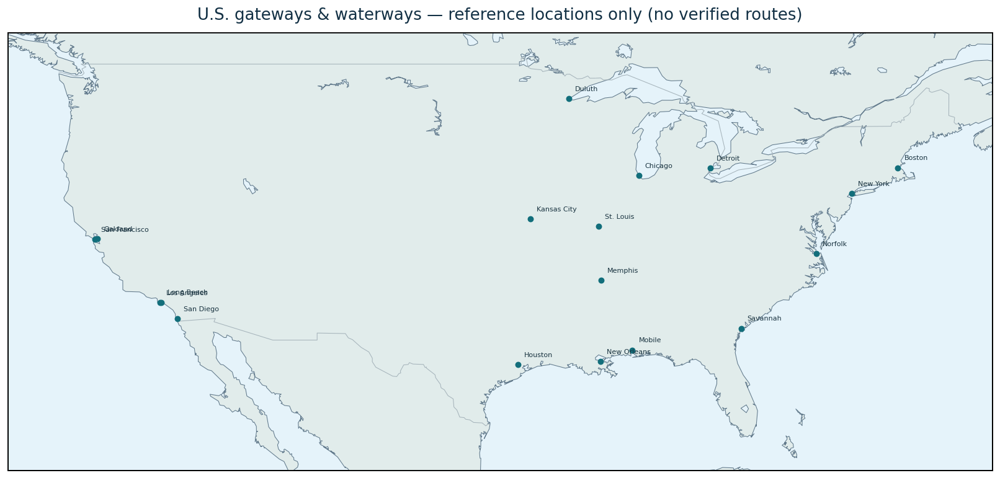

U.S. gateway and waterway atlas
Approximate locations for planning. Read the planning scenarios.
The interactive map requires an internet connection for map tiles.

Approximate locations for planning. Read the planning scenarios.
The interactive map requires an internet connection for map tiles.
